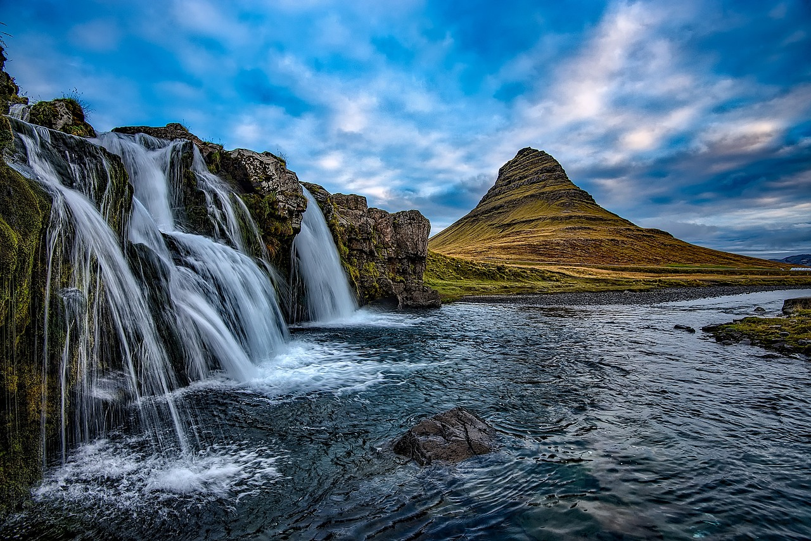

Reasons Why You Should Visit Iceland! (AW Portfolio 1)
"Emotional landscapes" Björk once recited in her 1997 record, Homogenic. These two words perfectly fit what Iceland brings to a lot of people! A small country with a small population of around 370,000 located in the Northern hemisphere, Iceland has a lot of gems! We hope through this list that we can convince you of making a visit this year and truely admire the beauty and culture of this Nordic haven!
1. Mountains
Whether you're taking day trip through the golden circle or south coast, or even waking up to a view of Mount Esja, you will not be able to deny the the beauty of Iceland's geogrpahical terrain! The sheer beauty will leave you changed and a whole new perspective.

2. Cold Weather
Now I have to admit, if you're looking for a sun-beach holiday, you'll be if you visit Iceland. So wrap up warm when visiting because the weather can change very drastically! But if you're visiting with kids, they will love the opportunity to experience the snow along with everything else on this list!

3. Waterfalls
Who doesn't love a good waterfall? There are many popular spots for tourists to visit with an abundance of choice! On the South Coast you can visit the immense Skogafoss waterfall with it's immense power or the Selfjalandsfoss waterfall in which you can walk around behind it! There's multitude of waterfalls you can discover here! So keep your eye out and maybe take a pit stop!

4. Reykjavik
Starting as just a farmstead, to then having a population 140,000 (that's a little bit above a third of the population!) From the Sun Yoyager,to the Hallgrimskirkja church, to the Reykjavik Concert Hall, Perlan mueseum, local pools, Althing parliament, local bars & restaurants, there's so much to do in the capital! The best part is is that it's very easy to make your way around by foot!

5. Music
Everyone will know the big name: Björk. You may also have heard of Sigur Ros, Ásgeir, Of Monsters & Men, Múm, or even Kaleo. Iceland is renowned for releasing some of the most interesting and ecclectic music in the world, some of the artists have gone on to inspire new & old generations of musicians! When visiting be sure to add their songs to your playlist! From 'Hyperballad', to 'King & Cross', to 'Svefn-g-englar', to 'Way Down We Go', to 'Dirty Paws', you're bound to find at least something you will like!

6. The Language
Anyone who loves langugaes will know how notorious Icelandic can be to learn! But fear not if you don't know the language as the majority of Icelanders know english! Though if you go, make sure to learn some easy words or phrases (if you want to challenge yourself) to show your enthusiasm during your visit! Many locals will be very appreciative of this and are very welcoming!

7. Geysers & Hot Springs
Iceland is a very young country geographically, which means that the ground is also very hot! Causing natural phenominons like gerysers and hot springs to occur whereby water is heated from the ground naturally! Sometimes these result in geysers whereby water will shoot out of the ground every few minutes! If you don't believe us, go see them for yourselves!
8. Glaciers
Formed over hundreds of years, they are a sight to behold. You can appreciate them from a distance or actually take part in climbing activities on the glaciers! Either way, they are not to be missed!

9. Auroras
These do not any introduction from us! Formed from natural gases from the sun and particles in the atmosphere, they are a sight to behold! Although not a garuntee on your trip to Iceland, if you do get lucky and see them, it may be the best part of your trip!

10. Volcanos
Although going too near them may not be the best idea in the world, learning about them and their role in Icelandic society is a fascinating venture! The recent eruption in 2021 from Mount Fagradallsfjall has piqued greater interest into these natural phenominons; recently a couple of exhibitions have popped up whereby you can learn more about the topic so be sure to check them out if you go!

11. ...the People
Last, but certainly not least... The people. Iceland has been ranked amongst some of the world's happiest countries and it really shows! When I visited mid 2023, cars would regularly stop to allow me to cross the road! Everywhere I went the natives were very polite and willing to help me out if I needed it! The country has also been ranked one of the most friendliest for LGBTQ+, is very welcoming to foreginers and has one of the lowest crime rates in world! You're pretty much garunteed a very welcoming experience if you go!

And there we have it folks! Just *some* of the reasons why you should plan a visit Iceland at some point! Of course we haven't covered all of the reasons in this list (as that would take a while to cover!) For more information about making a trip be sure to visit the Trip Advisor page below for more information for planning out your activities below:
tripadvisorarticle: tours and tickets*free to use / open source* images from: pixabay.com, bjork.com